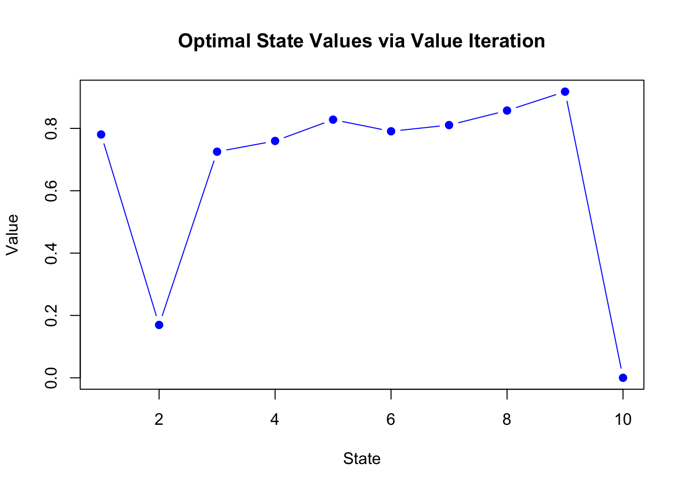
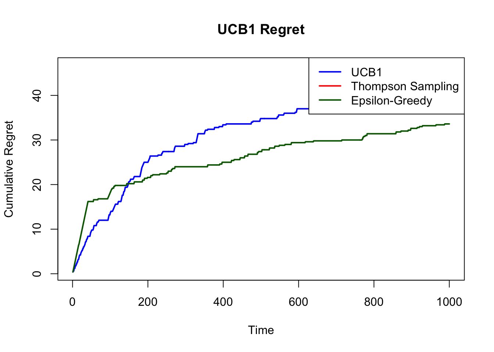

Chapter 11 Appendix Function Approximation Fundamentals in Reinforcement Learning: Bridging Tabular and Deep Methods
11.1 Introduction
The transition from tabular reinforcement learning to modern deep RL represents one of the most significant advances in the field. However, this leap often obscures a crucial intermediate stage that forms the theoretical and practical foundation for all scalable RL methods: classical function approximation. Understanding linear function approximation, basis functions, and feature engineering is essential for grasping why deep RL works, when it fails, and how to design effective representations for learning agents.
In tabular RL, we maintain separate value estimates for each state-action pair, which becomes computationally intractable when dealing with large or continuous state spaces. Function approximation addresses this limitation by learning a parameterized function that generalizes across states. This generalization is both the strength and the challenge of function approximation—it enables learning in complex environments but introduces the fundamental tradeoff between discrimination and generalization that shapes all modern RL algorithms.
This exploration begins with feature engineering and state representation, examining how raw observations transform into meaningful features for learning. We then progress through the mathematical foundations of linear function approximation and explore classical basis function methods including coarse coding, tile coding, and radial basis functions. These concepts form the essential bridge between the theoretical guarantees of tabular methods and the empirical success of deep neural networks.
11.2 Feature Engineering and State Representation
The quality of state representation fundamentally determines the success of any RL algorithm. Raw sensory data or environmental observations rarely provide the optimal basis for value function learning. Effective feature engineering transforms high-dimensional, noisy observations into compact, informative representations that facilitate learning and generalization.
11.2.1 The Discrimination vs Generalization Tradeoff
At the heart of feature design lies a fundamental tension: features must discriminate between states that require different actions while generalizing across states that should share similar values. This tradeoff manifests in several dimensions:
Discrimination requires features that can distinguish between states where the optimal policy differs significantly. Consider a navigation task where small position differences near obstacles require very different actions. Here, fine-grained spatial features are essential for safety and performance.
Generalization demands that similar states share feature representations, enabling learning from one experience to improve decisions in related states. In the same navigation task, distant regions of free space should share features so that collision-avoidance knowledge transfers broadly.
The mathematical formalization of this tradeoff appears in the approximation error of the value function. Given a feature mapping \(\phi: S \rightarrow \mathbb{R}^d\) and parameter vector \(\theta \in \mathbb{R}^d\), the approximate value function is:
\[V_\theta(s) = \phi(s)^T \theta = \sum_{i=1}^d \phi_i(s) \theta_i\]
The approximation error for any target function \(V^*\) is:
\[\|V^* - \Pi V^*\|^2\]
where \(\Pi\) is the projection operator onto the span of the feature space. This error depends critically on how well the features capture the structure of the optimal value function.
11.2.2 Feature Extraction Principles
Effective feature extraction in RL follows several key principles that distinguish it from supervised learning contexts. RL features must capture not just the current state but also the temporal and causal structure relevant to decision-making.
Temporal Dependencies: Unlike static pattern recognition, RL features often need to encode temporal information. Position and velocity in a physical system, or recent history in a partially observable environment, exemplify features that capture temporal structure essential for optimal control.
Action-Relevant Information: Features should emphasize aspects of the state that differentiate between the consequences of different actions. In a trading environment, price trends might be more relevant than absolute prices, as they better predict the outcomes of buy/sell decisions.
Hierarchical Structure: Many environments exhibit hierarchical structure that effective features should capture. Room-based features in navigation tasks, or game-phase indicators in strategic games, provide the appropriate level of abstraction for learning policies.
The design process involves analyzing the environment dynamics to identify which aspects of the raw state space are most predictive of future rewards under different actions. This analysis guides the construction of feature mappings that balance expressiveness with computational tractability.
11.3 Mathematical Foundations of Linear Function Approximation
Linear function approximation forms the theoretical cornerstone for understanding all parametric value function methods. The linearity assumption, while restrictive, provides crucial theoretical guarantees and computational advantages that make it an essential starting point for function approximation in RL.
11.3.1 Linear Value Function Approximation
In linear function approximation, we represent the value function as a linear combination of basis functions:
\[V_\theta(s) = \sum_{i=1}^d \phi_i(s) \theta_i = \boldsymbol{\phi}(s)^T \boldsymbol{\theta}\]
where \(\boldsymbol{\phi}(s) = [\phi_1(s), \phi_2(s), \ldots, \phi_d(s)]^T\) is the feature vector for state \(s\), and \(\boldsymbol{\theta} = [\theta_1, \theta_2, \ldots, \theta_d]^T\) contains the learnable parameters.
Similarly, for action-value functions:
\[Q_\theta(s,a) = \boldsymbol{\phi}(s,a)^T \boldsymbol{\theta}\]
The linear structure enables efficient updates and provides convergence guarantees under certain conditions. The gradient of the value function with respect to parameters is simply:
\[\nabla_\theta V_\theta(s) = \boldsymbol{\phi}(s)\]
This simple gradient form underlies the computational efficiency of linear methods and explains why they remain relevant even in the era of deep learning.
11.3.2 Temporal Difference Learning with Function Approximation
When applying TD learning with linear function approximation, the update rule becomes:
\[\boldsymbol{\theta}_{t+1} = \boldsymbol{\theta}_t + \alpha [R_{t+1} + \gamma V_\theta(S_{t+1}) - V_\theta(S_t)] \boldsymbol{\phi}(S_t)\]
This update moves the parameters in the direction that reduces the temporal difference error for the current transition. The key insight is that each update affects the value function globally across all states, weighted by their feature similarity to the current state.
For Q-learning with linear function approximation:
\[\boldsymbol{\theta}_{t+1} = \boldsymbol{\theta}_t + \alpha [R_{t+1} + \gamma \max_{a'} Q_\theta(S_{t+1}, a') - Q_\theta(S_t, A_t)] \boldsymbol{\phi}(S_t, A_t)\]
11.3.3 Convergence Properties and the Deadly Triad
Linear TD methods enjoy strong convergence guarantees under on-policy learning. The fixed-point theorem guarantees that on-policy TD(0) with linear function approximation converges to a unique solution. However, off-policy learning introduces potential instability, particularly when combined with function approximation and bootstrapping—the so-called “deadly triad.”
The projection matrix \(\mathbf{P}\) onto the feature space plays a crucial role in understanding convergence. For a feature matrix \(\boldsymbol{\Phi}\) with rows \(\boldsymbol{\phi}(s)^T\), the projection is:
\[\mathbf{P} = \boldsymbol{\Phi}(\boldsymbol{\Phi}^T \mathbf{D} \boldsymbol{\Phi})^{-1}\boldsymbol{\Phi}^T \mathbf{D}\]
where \(\mathbf{D}\) is a diagonal matrix of state visitation probabilities. The TD fixed point is:
\[\boldsymbol{\theta}^* = (\boldsymbol{\Phi}^T \mathbf{D} \boldsymbol{\Phi})^{-1} \boldsymbol{\Phi}^T \mathbf{D} \mathbf{T}^{\pi} \mathbf{v}\]
where \(\mathbf{T}^{\pi}\) is the Bellman operator for policy \(\pi\).
11.4 Classical Basis Function Methods
Classical basis function methods provide systematic approaches to constructing feature representations that balance computational efficiency with representational power. These methods form the bridge between tabular representations and modern deep learning approaches.
11.4.1 Coarse Coding
Coarse coding represents one of the most intuitive and widely applicable basis function methods. The core idea is to use overlapping, binary-valued features that divide the state space into coarse regions, with each feature active across multiple regions.
Mathematical Formulation: For a continuous state space, coarse coding defines a set of regions \(\{R_1, R_2, \ldots, R_d\}\) and corresponding indicator functions:
\[\phi_i(s) = \begin{cases} 1 & \text{if } s \in R_i \\ 0 & \text{otherwise} \end{cases}\]
The key insight is that regions should overlap significantly, so that nearby states activate similar sets of features, enabling generalization, while distant states activate different feature combinations, preserving discrimination.
Generalization Properties: The degree of overlap between regions controls the generalization properties. If two states share \(k\) active features out of \(d\) total features, the similarity in their value estimates is proportional to \(k/d\). This provides explicit control over the smoothness of the learned function.
Implementation Example: In a 2D navigation task, circular regions of radius \(r\) placed on a grid with spacing \(s < r\) create overlapping coarse coding. The number of active features for any state is approximately constant, and the degree of overlap is controlled by the ratio \(r/s\).
# Coarse Coding Implementation in R with Visualization
create_coarse_coding <- function(state_dims, num_features, overlap_factor = 2) {
state_dims <- as.numeric(state_dims)
# Generate random centers for coarse coding regions within [0, dim1] x [0, dim2]
centers <- matrix(
c(runif(num_features, 0, state_dims[1]),
runif(num_features, 0, state_dims[2])),
nrow = num_features, ncol = 2, byrow = FALSE
)
# Estimate average spacing and set radius for overlap
avg_spacing <- (prod(state_dims) / num_features)^(1/2) # for 2D
radius <- overlap_factor * avg_spacing / 2 # Adjusted for circle coverage
# Feature computation function
compute_features <- function(state) {
distances <- sqrt(rowSums((centers - matrix(rep(state, num_features),
nrow = num_features, byrow = TRUE))^2))
as.numeric(distances <= radius)
}
return(list(
compute_features = compute_features,
centers = centers,
radius = radius,
state_dims = state_dims
))
}
# Visualization function for 2D coarse coding
visualize_coarse_coding <- function(coarse_coder, state = NULL, show_centers = TRUE) {
if (length(coarse_coder$state_dims) != 2) {
stop("Visualization only supported for 2D state spaces.")
}
centers <- coarse_coder$centers
radius <- coarse_coder$radius
state_dims <- coarse_coder$state_dims
num_features <- nrow(centers)
# Set up plot
plot(NA, xlim = c(0, state_dims[1]), ylim = c(0, state_dims[2]),
xlab = "State Dimension 1", ylab = "State Dimension 2",
main = "Coarse Coding: Receptive Fields and Active Regions")
grid()
# Draw each receptive field (circle)
for (i in 1:num_features) {
center <- centers[i, ]
# Create circle
theta <- seq(0, 2*pi, length.out = 50)
x_circle <- center[1] + radius * cos(theta)
y_circle <- center[2] + radius * sin(theta)
lines(x_circle, y_circle, col = "gray", lty = 1, lwd = 1)
}
if (show_centers) {
points(centers[, 1], centers[, 2], pch = 19, col = "gray30", cex = 0.8)
}
# If a state is provided, compute active features and highlight them
if (!is.null(state)) {
features <- coarse_coder$compute_features(state)
active_indices <- which(features == 1)
# Highlight active receptive fields
for (i in active_indices) {
center <- centers[i, ]
theta <- seq(0, 2*pi, length.out = 50)
x_circle <- center[1] + radius * cos(theta)
y_circle <- center[2] + radius * sin(theta)
lines(x_circle, y_circle, col = "red", lwd = 2)
}
# Plot the query state
points(state[1], state[2], pch = 17, col = "blue", cex = 1.8, lwd = 2)
text(state[1], state[2] + 0.3, labels = "State", col = "blue", cex = 0.9)
# Add legend
legend("topright",
legend = c("Receptive Field", "Active Field", "Center", "State"),
lty = c(1, 1, NA, NA),
col = c("gray", "red", "gray30", "blue"),
pch = c(NA, NA, 19, 17),
lwd = c(1, 2, 1, 1),
pt.cex = c(1,1,0.8,1),
bty = "n", cex = 0.8)
# Print active count on plot
title(sub = paste(sum(features), "active features out of", num_features))
}
}
# Example usage
set.seed(123) # For reproducible centers
coarse_coder <- create_coarse_coding(c(10, 10), 50, overlap_factor = 1.5)
features <- coarse_coder$compute_features(c(3.2, 7.8))
# Print summary
print(paste("Active features:", sum(features), "out of", length(features)))## [1] "Active features: 4 out of 50"
11.4.2 Tile Coding
Tile coding represents a systematic refinement of coarse coding that provides more uniform coverage and predictable generalization properties. It partitions the state space using multiple overlapping grids (tilings), with each grid offset to ensure comprehensive coverage.
Mathematical Framework: Tile coding uses \(n\) tilings, each partitioning the state space into a regular grid. For a \(d\)-dimensional state space, tiling \(i\) creates regions:
\[T_{i,\mathbf{j}}(s) = \prod_{k=1}^d \mathbf{1}_{[a_{i,k,j_k}, a_{i,k,j_k+1})}(s_k)\]
where \(\mathbf{j} = (j_1, j_2, \ldots, j_d)\) indexes the tile within tiling \(i\), and \(a_{i,k,j_k}\) defines the boundaries for dimension \(k\).
The feature vector has exactly \(n\) active features (one per tiling), providing both computational efficiency and uniform generalization. The offsets between tilings are typically chosen to be incommensurate to ensure good coverage properties.
Asymmetric Generalization: Unlike circular coarse coding, tile coding provides asymmetric generalization that respects the natural coordinate system of the problem. This makes it particularly suitable for control problems where state dimensions have different physical meanings.
# Tile Coding Implementation with Visualization
create_tile_coding <- function(state_low, state_high, num_tilings, tiles_per_dim) {
state_dims <- length(state_low)
state_range <- state_high - state_low
tile_width <- state_range / tiles_per_dim
# Generate random offsets for each tiling
offsets <- matrix(runif(num_tilings * state_dims, 0, tile_width),
nrow = num_tilings, ncol = state_dims)
compute_features <- function(state) {
features <- rep(0, num_tilings * prod(tiles_per_dim))
for (tiling in 1:num_tilings) {
# Apply offset and compute tile indices
offset_state <- pmax(pmin(state - offsets[tiling, ], state_high), state_low)
tile_indices <- pmin(floor((offset_state - state_low) / tile_width),
tiles_per_dim - 1) + 1
# Convert multi-dimensional index to linear index
linear_index <- 1
multiplier <- 1
for (dim in 1:state_dims) {
linear_index <- linear_index + (tile_indices[dim] - 1) * multiplier
multiplier <- multiplier * tiles_per_dim[dim]
}
# Activate corresponding feature
feature_index <- (tiling - 1) * prod(tiles_per_dim) + linear_index
features[feature_index] <- 1
}
return(features)
}
# Return offsets for visualization purposes
return(list(
compute_features = compute_features,
num_features = num_tilings * prod(tiles_per_dim),
offsets = offsets,
state_low = state_low,
state_high = state_high,
tiles_per_dim = tiles_per_dim,
tile_width = tile_width
))
}
# Visualization function for 2D tile codings
visualize_tilings <- function(tile_coder, state = NULL, show_state = TRUE) {
if (length(tile_coder$state_low) != 2) {
stop("Visualization only supported for 2D state spaces.")
}
state_low <- tile_coder$state_low
state_high <- tile_coder$state_high
tiles_per_dim <- tile_coder$tiles_per_dim
tile_width <- tile_coder$tile_width
offsets <- tile_coder$offsets
num_tilings <- nrow(offsets)
# Set up plot
plot(state_high[1] + tile_width[1], state_high[2] + tile_width[2],
type = 'n', xlim = c(state_low[1], state_high[1] + tile_width[1]),
ylim = c(state_low[2], state_high[2] + tile_width[2]),
xlab = "State Dimension 1", ylab = "State Dimension 2",
main = "Tile Coding: Active Tiles per Tiling")
grid()
# Define colors for each tiling
colors <- rainbow(num_tilings)
# Draw each tiling's grid and highlight active tile if state is given
if (!is.null(state)) {
features <- tile_coder$compute_features(state)
} else {
features <- NULL
}
for (tiling in 1:num_tilings) {
offset <- offsets[tiling, ]
color <- colors[tiling]
# Draw grid lines for this tiling
x_ticks <- seq(state_low[1] - offset[1], state_high[1] + tile_width[1],
by = tile_width[1])
y_ticks <- seq(state_low[2] - offset[2], state_high[2] + tile_width[2],
by = tile_width[2])
# Draw vertical lines
for (x in x_ticks) {
lines(c(x, x), c(state_low[2] - offset[2], state_high[2] + tile_width[2]),
col = color, lty = 2, lwd = 1)
}
# Draw horizontal lines
for (y in y_ticks) {
lines(c(state_low[1] - offset[1], state_high[1] + tile_width[1]), c(y, y),
col = color, lty = 2, lwd = 1)
}
# If state is provided, compute and highlight active tile
if (!is.null(state)) {
offset_state <- pmax(pmin(state - offset, state_high), state_low)
tile_idx <- floor((offset_state - state_low) / tile_width) + 1
tile_idx <- pmin(tile_idx, tiles_per_dim)
# Compute bottom-left corner of the active tile
tile_start <- state_low + (tile_idx - 1) * tile_width
tile_end <- tile_start + tile_width
# Highlight active tile
rect(tile_start[1], tile_start[2], tile_end[1], tile_end[2],
col = adjustcolor(color, alpha.f = 0.3), border = color, lwd = 2)
}
}
# Add legend
legend("topright", legend = paste("Tiling", 1:num_tilings),
fill = adjustcolor(colors, alpha.f = 0.3), bty = "n", cex = 0.8)
# Plot the state point
if (show_state && !is.null(state)) {
points(state[1], state[2], pch = 19, col = "black", cex = 1.5)
text(state[1] + 0.02, state[2], labels = "State", pos = 4)
}
}
# Example: 2D state space with 4 tilings, 8x8 tiles each
tile_coder <- create_tile_coding(c(0, 0), c(1, 1), 4, c(8, 8))
features <- tile_coder$compute_features(c(0.3, 0.7))
# Print summary
print(paste("Total features:", tile_coder$num_features))## [1] "Total features: 256"## [1] "Active features: 4"
11.4.3 Radial Basis Functions
Radial Basis Functions (RBFs) provide smooth, continuous basis functions that offer fine-grained control over local approximation properties. Unlike the binary activations of coarse coding, RBFs produce graded responses that decrease with distance from center points.
Mathematical Definition: An RBF network uses basis functions of the form:
\[\phi_i(s) = \exp\left(-\frac{\|s - c_i\|^2}{2\sigma_i^2}\right)\]
where \(c_i\) is the center of the \(i\)-th basis function and \(\sigma_i\) controls its width. The Gaussian form ensures smooth derivatives and localized influence.
Approximation Properties: RBF networks are universal approximators, meaning they can approximate any continuous function to arbitrary accuracy with sufficient basis functions. The approximation quality depends on the placement of centers and the choice of widths.
For optimal approximation, centers should be distributed to match the complexity of the target function, with higher density in regions of rapid change. The width parameter \(\sigma_i\) controls the locality of influence—smaller values create more localized basis functions that provide finer discrimination but may require more functions for coverage.
Adaptive Placement: Advanced RBF methods adaptively place centers based on the data distribution or approximation error. Common strategies include: - K-means clustering to place centers at data centroids - Error-driven placement in regions of high approximation error - Incremental addition of basis functions during learning
# Radial Basis Function Implementation
create_rbf_network <- function(centers, sigmas) {
num_centers <- nrow(centers)
compute_features <- function(state) {
features <- numeric(num_centers)
for (i in 1:num_centers) {
distance_sq <- sum((state - centers[i, ])^2)
features[i] <- exp(-distance_sq / (2 * sigmas[i]^2))
}
return(features)
}
return(list(compute_features = compute_features, num_features = num_centers))
}
# Example: Create RBF network for 2D space
set.seed(42)
centers <- matrix(runif(20, 0, 1), nrow = 10, ncol = 2)
sigmas <- rep(0.2, 10)
rbf_network <- create_rbf_network(centers, sigmas)
# Test feature computation
test_state <- c(0.5, 0.5)
features <- rbf_network$compute_features(test_state)
print(paste("Sum of RBF activations:", round(sum(features), 3)))## [1] "Sum of RBF activations: 2.544"# Visualize RBF activation pattern
library(ggplot2)
grid_points <- expand.grid(x = seq(0, 1, 0.02), y = seq(0, 1, 0.02))
activations <- apply(grid_points, 1, function(point) sum(rbf_network$compute_features(point)))
grid_points$activation <- activations
ggplot(grid_points, aes(x = x, y = y, fill = activation)) +
geom_raster() +
scale_fill_viridis_c() +
labs(title = "RBF Network Activation Pattern") +
theme_minimal()
11.5 Practical Considerations and Implementation Guidelines
The choice between different basis function methods depends on problem characteristics, computational constraints, and desired generalization properties. Each method offers distinct advantages for different scenarios.
Computational Efficiency: Tile coding provides the most computationally efficient option, with exactly \(n\) active features per state evaluation. Coarse coding requires checking membership in all regions, while RBF networks require computing distances to all centers. For real-time applications, tile coding often provides the best performance trade-off.
Memory Requirements: The memory footprint varies significantly across methods. Tile coding with \(n\) tilings and \(k\) tiles per tiling requires \(n \times k\) parameters. Sparse methods like coarse coding can be more memory-efficient when most regions are inactive, while dense RBF networks require storage for all basis function parameters.
Generalization Control: RBF networks offer the finest control over generalization properties through center placement and width selection. Tile coding provides intermediate control through tiling structure and offset choices. Coarse coding offers the least precise control but is often sufficient for many applications.
Problem-Specific Considerations: Navigation and control problems often benefit from tile coding’s respect for coordinate structure. Pattern recognition tasks may favor RBF networks’ smooth generalization. Problems with sparse features or irregular state spaces might benefit from adaptive coarse coding approaches.
The integration of these classical methods with modern deep learning approaches represents an active area of research. Hybrid architectures that combine learned representations with structured basis functions offer promising directions for improving sample efficiency and interpretability in deep RL.
11.6 Conclusion
Function approximation fundamentals provide the essential bridge between the theoretical guarantees of tabular RL and the practical power of modern deep methods. Linear function approximation, despite its limitations, offers crucial insights into convergence properties and stability that inform the design of more complex algorithms. Classical basis function methods—coarse coding, tile coding, and radial basis functions—demonstrate systematic approaches to feature construction that remain relevant for understanding and improving modern RL systems.
The discrimination versus generalization tradeoff lies at the heart of all function approximation methods. Understanding this tradeoff through the lens of classical basis functions provides intuition that translates directly to neural network design and training. The mathematical frameworks developed here establish the theoretical foundation for analyzing convergence, stability, and approximation quality in any parametric value function method.
As RL continues to tackle increasingly complex domains, the principles explored in this discussion remain fundamental. Whether designing neural network architectures, selecting training procedures, or debugging learning failures, the insights from linear methods and classical basis functions provide essential tools for the modern RL practitioner. The journey from tabular to deep RL passes necessarily through these foundational concepts, making their mastery crucial for anyone serious about understanding and advancing reinforcement learning.